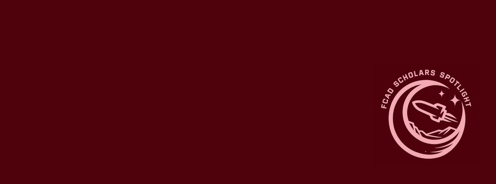

Students Bring Early-Career Research to Life in the FCAD Scholars Spotlight

November 13, 2026 — This fall, five UMass undergraduates are writing their way into science communication through the FCAD Scholars Spotlight, a profile series on the UMass Astronomy website featuring early-career researchers across the Five College Astronomy Department (FCAD).
The series was started by Moiz Khalil (’24), who went on to study science writing at Johns Hopkins. It has since grown into an independent study course that I have advised in Spring 2026 (2 students) and Fall 2026 (5 students). Students earn credit while building a writing portfolio: they nominate researchers, conduct interviews, draft and revise their profiles through peer review and editing, and publish the finished stories on the department website.
The researchers they feature include undergraduate students, graduate students, and postdocs whose work often doesn’t reach a general audience. The pieces turn that research into stories anyone can follow. This semester’s profiles have covered the enigmatic nature of “Little Red Dots,” a restored historic telescope on Orchard Hill, a strangely blue clump of stars in one of the universe’s earliest galaxies, and systems where stars and planets form alongside objects that aren’t quite either: brown dwarfs.
Images from this fall’s profiles. Photos: UMass Astronomy FCAD Scholars Spotlight.
Four of this semester’s seven profiles are now published, with three more on the way. This fall’s writers are Ada Ciamarra, Bella Kalina, Bradley Mills, Jack Bertling, and Spencer Yosko.
It has been a joy to work with these students as they learn to interview scientists, translate technical ideas into plain language, and find the story in the science. Read the full series here.